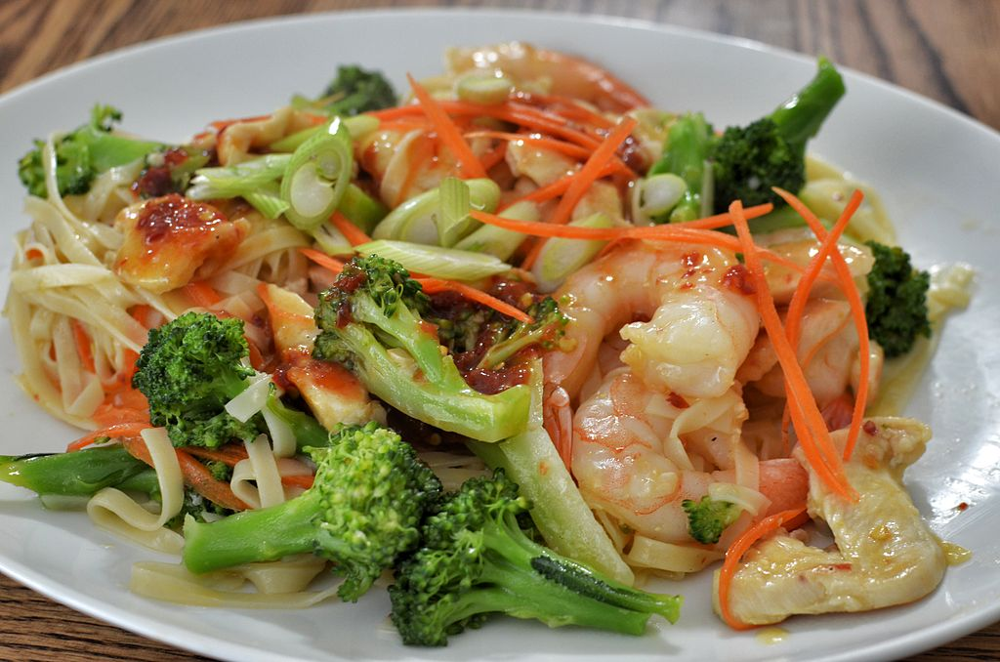

Broccoli Stir Fry
Description
This is a simple stir fry recipe that can be made with chicken or other meat.
Ingredients
- Broccoli
- Chicken or other meat
- Powdered or fresh ginger, grated
- Soy sauce
- Oil to fry with (vegetable, canola, or avocado oil)
- Sesame oil
- Sesame sees
- Black pepper
Steps
- Cut meat into small pieces.
- Chop broccoli into medium to small sized pieces, to your liking.
- Place oil in wok and turn to high heat.
- Place sesame seeds into wok and stir fry them until golden-brown. Remove them from the oil and set aside for later
- Stir-fry the meat. Drain juices and add more oil as needed
- Add soy sauce, about a tablespoon.
- Add ths sesame seeds, sesame oil, and ginger.
- Add the broccoli. Cook the stalks a bit longer than the heads.